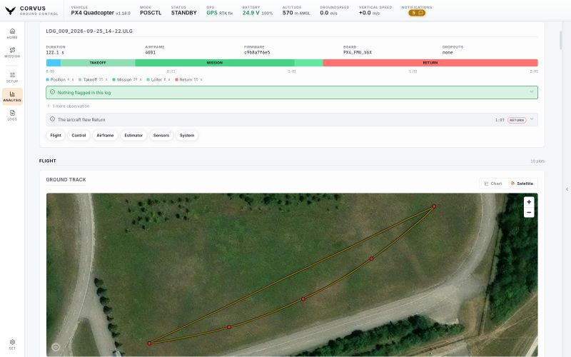
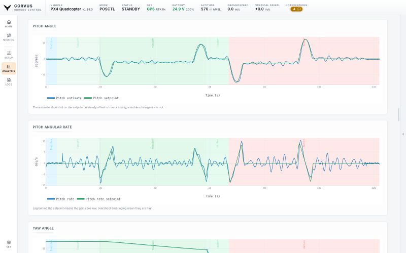

Review
Logs and Flight Review
Two kinds of log, and one reviewer for both. The aircraft writes a detailed log on its SD card; Corvus records the telemetry it received on this laptop. Either can be reduced to the plots and findings that answer "was that flight healthy?", on your own machine, with nothing uploaded anywhere.


Vehicle logs
ANALYSIS in the left rail lists the logs on the flight
controller's SD card. Tick several and walk away: they are downloaded one
after another with a progress bar, and Cancel works throughout. Files land as
log_<id>_<UTC date>.ulg, so they are still
recognisable a month later, in ~/.corvus/flightlogs by default.
On ArduPilot the on-board log is DataFlash (.bin). It downloads
the same way and lands in the same folder, but Flight Review reads ULog
only: it names the format and points you to Mission Planner rather than
failing obscurely. Telemetry Review, below, works on both stacks.
Recorded telemetry (tlogs)
Corvus records the MAVLink stream it receives, from the first frame of
every connection, without being asked. There is one file per flight: when
the aircraft disarms after a flight, the file is closed and the next one
begins. This is the log that always exists, even when the aircraft's own log
does not. Tlogs are written to ~/.corvus/logs by default, and
every file records the Corvus version that wrote it.
The LOGS page in the left rail is something else: the console transcript of this session, which you can copy or export for a bug report.
Flight Review
Pick a downloaded log and Corvus reduces it to the plots that answer "was that flight healthy?": motors, clipping, the estimator (EKF), battery and more, with findings above the plots and the aircraft's own messages below, filtered by severity. A log that never came through Corvus can be opened too, from anywhere on your machine. Everything is parsed locally.


Findings
The findings name the problem and say where to look. Each one is a single line you can scan, with the reasoning behind it one click away: the explanations are a paragraph each, and a dozen paragraphs stacked up would hide the one line that mattered. Problems come first, in order of severity; context worth knowing but needing no action folds away under "2 more observations".
Every finding carries the second of the flight it was measured at and the mode being flown then, and so does every line of the aircraft's message log, so a claim at the top of the page and the dip in the plot that caused it line up.
What it reads beyond thresholds
- A motor held at full output, and for how long.
- How long the estimator actually rejected a sensor, rather than only how high the innovation spiked.
- In-flight position and heading resets.
- PX4's own failure detector firing.
- A compass whose field strength rises and falls with the throttle: interference in the power wiring, not a calibration to redo.
- A rate loop ringing, at a named frequency and amplitude.
- ESC RPM where the ESCs report it, plotted beside the commands: commands say what was asked for, RPM says what happened.
What it deliberately does not say
One alarm about something ordinary costs every other finding its credibility, so:
- A motor at its limit is only reported when the others still had headroom. All of them together is a hard climb, not a failure.
- An estimator reset counts only in the air, since every counter ticks when the first GPS fix arrives on the ground.
- Compass interference needs a physically believable swing before the wiring is blamed.
- A brief innovation spike is an observation rather than a warning, because it is only a problem when it lasts.
- The heading alignment PX4 makes after every takeoff is context, not a warning.
- The battery is judged by the level the pack held, not the one sample at the hardest punch, and sag is measured over a few seconds, not from full to empty.
Sensitivity
How readily a number becomes a finding is yours to set, once, under Settings, Analysis (or in the first start setup):
| Setting | Reports |
|---|---|
| Relaxed | Only what should keep the aircraft on the ground. |
| Normal (default) | Leaves a healthy aircraft, flown normally, with an empty list. |
| Strict | Every early sign, for tuning and new airframes. |
The plots are the same at every setting, and the page says which setting its findings were read at. Whatever the setting, only the time the aircraft was armed is measured: clipping counted on the bench, a refusal to arm, a receiver that never heard a transmitter and a GPS still looking for its first fix are not the flight.
The ground track
The ground track has two readings, with a switch in its corner:
- Chart
- Metres north over metres east on equal axes, which makes the gap between the estimate and the GPS measurable.
- Satellite
- The same path over the map imagery, at the place it was actually flown (the field, the runway, the tree line the turn was flown around), through the same tile cache the map uses, so it works offline wherever those tiles were downloaded.
A flight with no global reference (indoors, or without a fix) has no origin to place on the Earth, and offers no switch rather than a guess.
The review can be wrong. It is a help for reading a log, not a verdict on airworthiness: check its plots and the aircraft yourself.
Telemetry Review
The same page, for a tlog instead of a ULog. The ULog is the better log, and when you can get it, it is the one to read. Telemetry Review exists because you cannot always get it: the SD card was not fitted, the download would take an hour over a 57600 link, or the aircraft did not come back. Corvus recorded the flight on this laptop either way, so pick a tlog and it is reduced to the same plots, the same mode and armed bands, the same findings and the same message log, drawn the same way, so the two read alike.
What a tlog can and cannot show
The page states this itself rather than leaving you to find out:
- Telemetry arrives at 1 to 50 Hz, not a ULog's 200 to 1000 Hz. An oscillation is visible; the shape of one cycle is not.
- There are no motor outputs and no data per IMU, because those never leave the aircraft.
What only a tlog has: the link
RADIO_STATUS, the drop counters and the signal strength at both
ends describe the radio between you and the aircraft, which a log written on
board cannot know about. That includes the stretches where the link
went silent, measured against the pace that recording actually kept
rather than a fixed threshold, so a slow radio is not reported as a fault.
A recording that ends with the aircraft still armed is said first and plainly, because that is the log somebody reads when an aircraft did not come home. The vehicle's own verdict is read too: the subsystems it reported as configured but not healthy, and the glitches its estimator flagged.